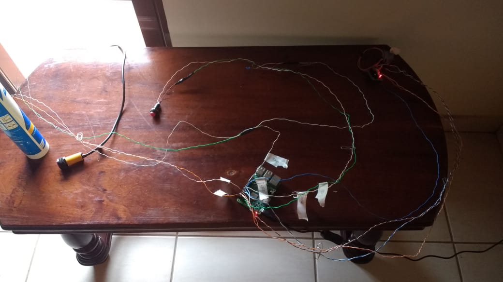
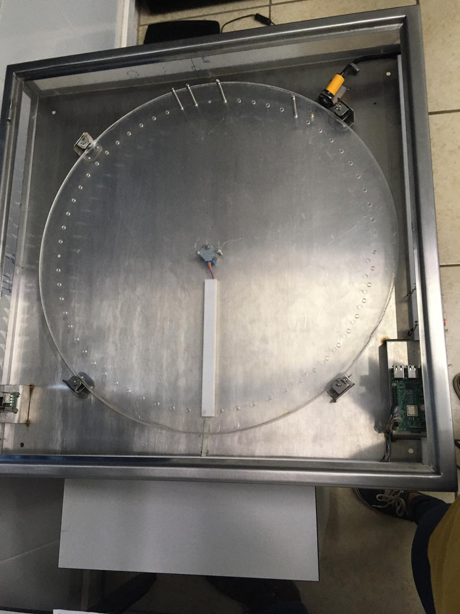
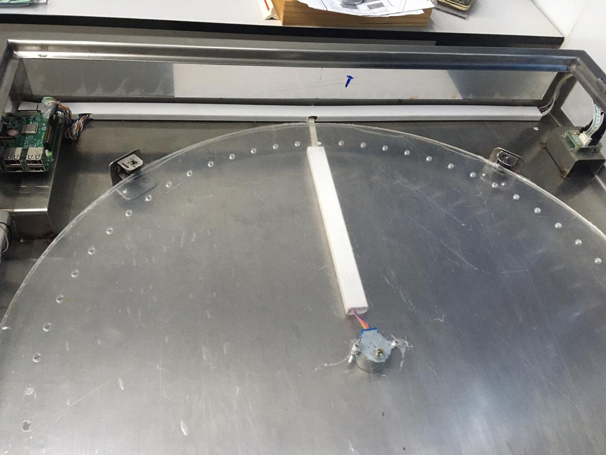
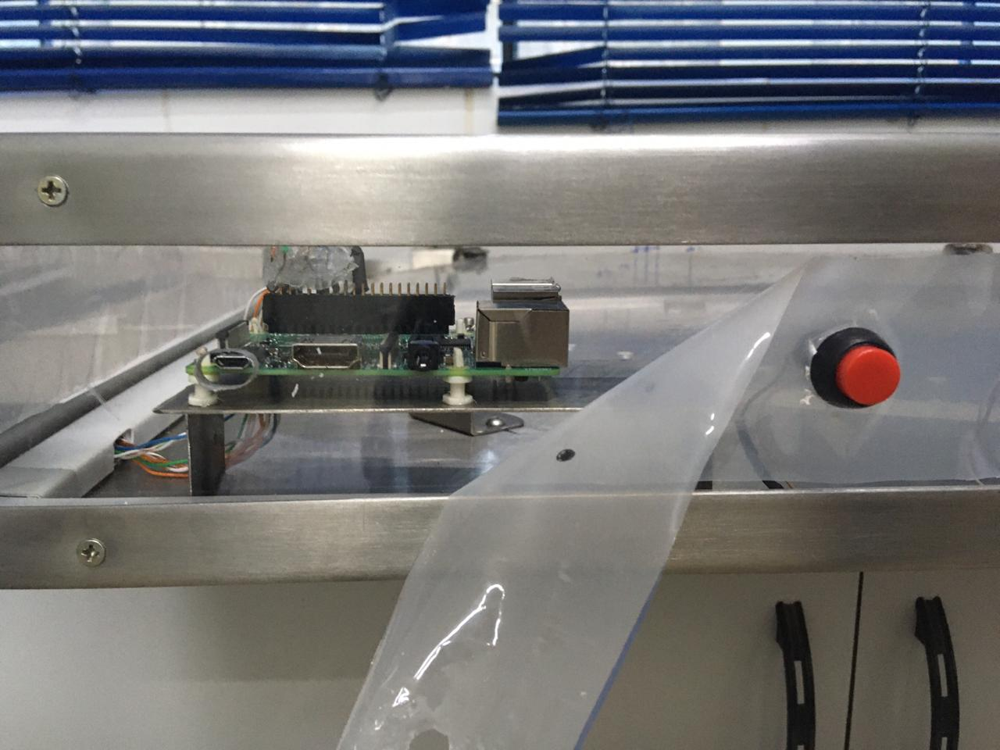
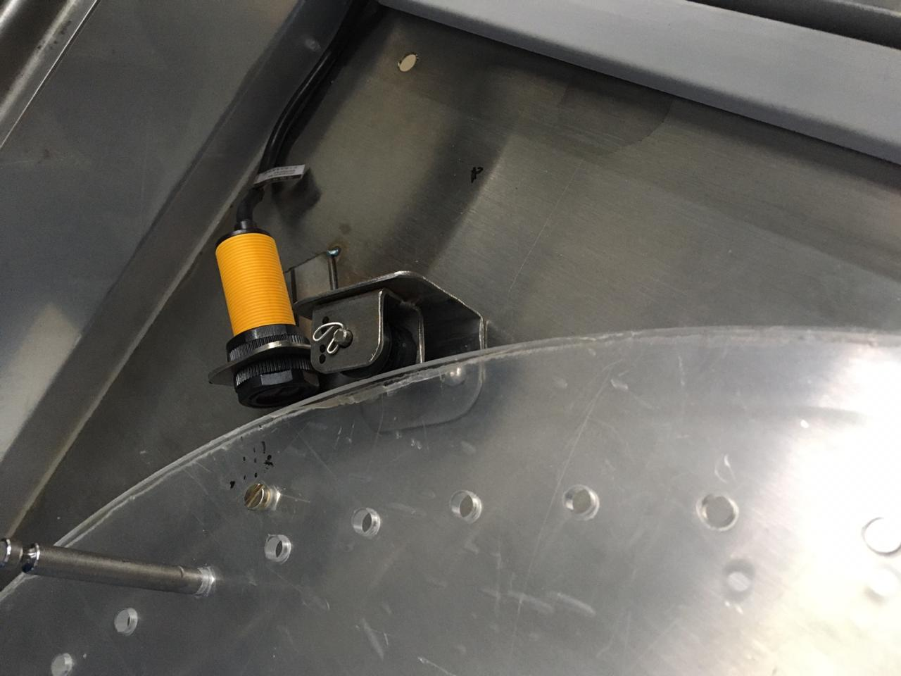
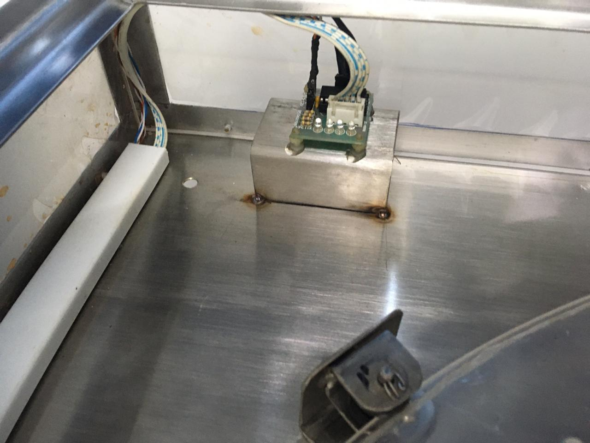
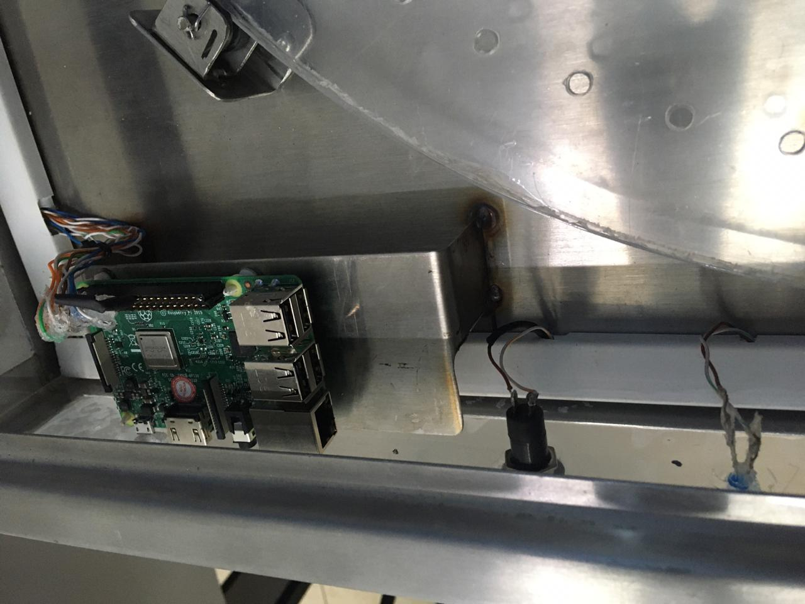

- Home
- >
- Portfolio
- >
- Projeto do Chaveiro
Projeto do Chaveiro
Esse foi um projeto que desenvolvi pela Asimov Jr, juntamente com a equipe de automação. O projeto consiste em um sistema de administração das chaves de uma empresa, permitindo requisições via internet de chaves específicas para usuários cadastrados.
 
 
 
Voltar ao Portfólio
Voltar ao início